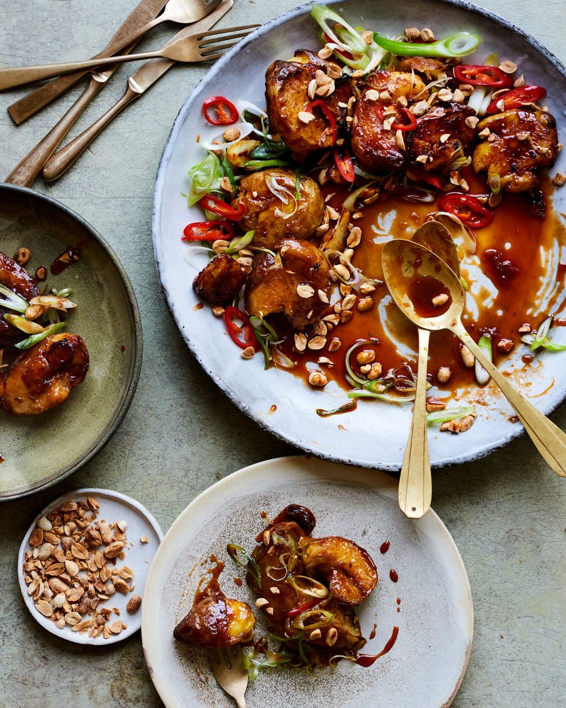

Jersey royals with sticky caramel Sichuan peppercorn sauce, peanuts and sesame seeds

The joy of these potatoes is in the mouth-numbing Sichuan peppercorns found hidden in their crisp crevices.
For the sauce
Steam the potatoes for 10-15 minutes or until tender, then take off the heat and let them cool a little.
Heat the oven to 200C (180C fan)/390F/gas 6. Pour the oil into a roasting tin and heat in the oven for five minutes. Crush the potatoes with the bottom of a bowl – not so much that they fall apart, but just so you squash and flatten them and increase the surface area. Take the roasting tin out of the oven, toss the potatoes in the oil and then roast for 30 minutes, turning halfway until they are golden and crisp.
Meanwhile, make the sauce. Put the sugar and 200ml cold water in a pan and heat gently until the sugar dissolves and turns into an amber caramel. Add the remaining ingredients, stir to combine and cook for four to five minutes over a low heat.
Toss the potatoes in the sauce, coating them well, then arrange on a serving platter and top with peanuts, sesame seeds, spring onions and the red chillies. Serve hot.